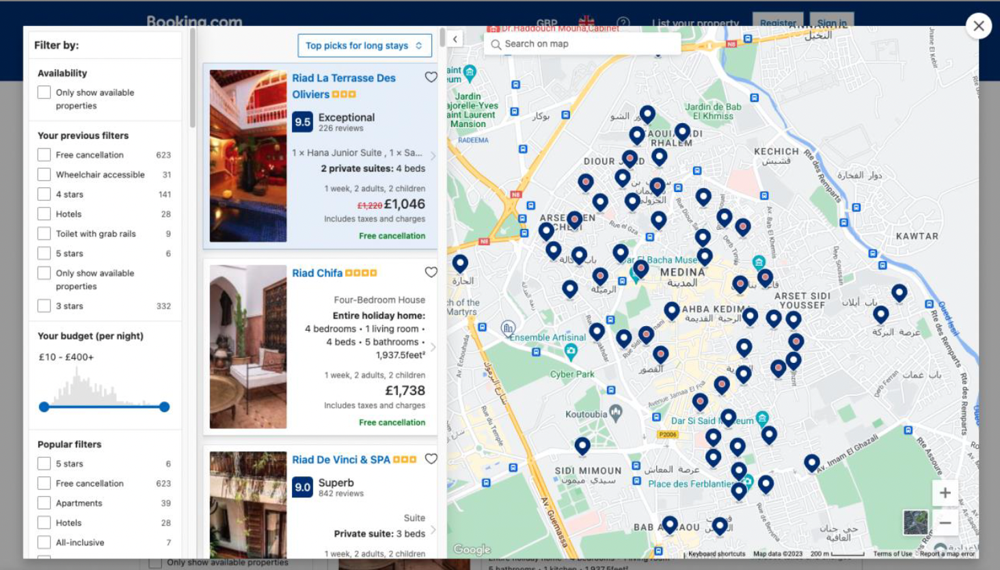
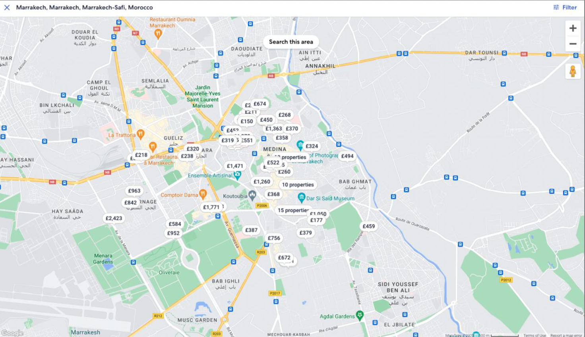

Effective Decisions for Travel Booking: Understanding User Behaviours for Usability Improvement
A comparative study between Booking.com and Expedia.co.uk, based on scenario-based tasks, identified usability issues and provided insights into participants' usage patterns.
Objectives
To explore the interdependence between cognitive processes and interactive website design, and how this relationship influences user experience.
To develop design guidelines for improving website usability, grounded in theoretical frameworks.
Tasks
Research Design
Participant Recruitment
Scenario-based Testing
Deductive Data Analysis based on Theoretical Frameworks
Reporting
Timeline
from March 2023 to April 2023
Problem Statement
Despite the widespread use of online travel platforms like Booking.com and Expedia.co.uk, there is a lack of usability design guidelines grounded in theoretical frameworks to inform effective and user-centred design. Designing research in this context is further complicated by participants' prior familiarity with these websites, which can influence interaction and bias qualitative data. This study addresses the gap by exploring user behaviour through scenario-based tasks and think-aloud protocols to examine behavioural and attitudinal patterns, aiming to inform the development of theoretically grounded design principles for travel websites.
Scenario-based Task for participants
Scenario
You have already planned out what to do and where to visit for the next couple of days during the trip. When you try to find accommodation within the proximity of the places you want to visit, what would you consider the most?
Task
Which city/country would you like to travel to? Can you choose one? Start looking up the accommodation.
The interview questions to understand information-seeking processes and decision-making
Question 1
How much time do you usually spend making a decision?
Question 2
What other activities involves before making a decision?
Question 3
With an abundance of options, do you always feel that you have made the optimal choice?
Note-taking or using a spreadsheet to compare prices and other features over a longer period of time
P2 and P3's Habits
The time users spend searching depends on their budget, but in most cases, they do not spend more than a couple of hours. For comparison purposes, they often keep multiple browser tabs open.
External Cognition: Cognitive Offloading
Participants used different tools to help ease their mental load while comparing options to make efficient decision-making depending on their goals.
Participants naturally lean toward saving time and mental energy, often using mental shortcuts or strategies that reduce the effort it takes to search and compare.
Depending on their personalities and booking habits, participants may reach a final decision at different times and through different strategies. However, they all relied on external tools to support their decision-making.
The tab-based design on both websites forced participants to constantly switch between tabs. This epistemic action increased extraneous cognitive load, which could be reduced through better visual representation and clearer information scents.
Poor visual layout leads to higher mental workload, as users make many eye fixations to find relevant information.
All participants had specific preferences (e.g., price, amenities) and used batch filtering to narrow choices efficiently.
Most ignored superfluous information on accommodation pages to reduce cognitive overload and save time.
Participants relied on working memory, frequently revisiting options. This implies that comparison tasks involve high cognitive demand.
Design Principle 1: Optimizing Epistemic Action for Easier Comparison
Juxtaposing two sets of information side-by-side can help reduce cognitive overload and enable users to reach decisions more efficiently. However, comparison tools should support active engagement with the comparison process rather than merely presenting symmetric information, as it can increase interaction costs.
Map View

Fig 1. Map view of Booking.com from participant browsing hotel options during interview

Fig 2. Map view of Expedia.co.uk from participant browsing hotel options during interview
External Cognition: Re-representation
Although list views showed approximate distances, participants preferred map views to help visualize unfamiliar areas, supporting externalized cognition.
While map views clearly offered benefits, neither site fully supported clear, explicit information presentation. This left users relying on external epistemic activities, which still incurred cognitive effort (Kirsh, 2010).
Table 1. Insights on each map view from interviews
No.
Booking.com's map view (refers to Fig. 1)
Expedia.co.uk's map view (refers to Fig. 2)
1
Frequent mouse dragging to match list items with map pins.
Price indicators on pins combined price and location info at a glance.
2
Hovering over pins was necessary to preview hotel details.
This provided better cognitive support (perception, attention, memory).
3
Visual clutter and dynamic view changes during hovering increased cognitive and interaction load (Lam, 2008).
Reduced interaction costs with clear visual cues and information scent.
All participants' Habits
Based on their previous experience, they understand that accommodation location was key to a convenient and efficient trip. This is where the map view becomes a very useful tool for finding accommodation.
P3's Habit
P3 specifically noted that transportation options (e.g. car rental, public transport) influenced his accommodation choice.
Cognitive Dimensions: Hard Mental Operation and Secondary Notation
Participants used map views to find optimal option near their planned itinerary locations, resulting in active engagement with the feature.
- Task-Goal Alignment
Participants' Challenges
Identical Pins
P1 and P3 struggled with identifying individual accommodations and relocated ones they previously viewed, as the identical pins across the map caused orientation and it was hard to memorize the exact location and features.
Wasted Time & Effort
After comparing options, they couldn’t easily recall which hotel they had already viewed because of the identical pin design, increasing cognitive load and interaction cost to relocate them.
Epistemic Actions
Booking.com's map view especially burdened participants cognitively due to the epistemic actions required by its layout, functionalities, and visual cues.
Complex Options
Users were forced to rely on either the list view or accept higher cognitive and motor effort navigating the map alone.
Design Principle 2: Making Uncertainty Clear with Colour-Coded System
Expedia.co.uk’s map view outperformed Booking.com’s by reducing cognitive load through price-labeled pins that offered clearer visual cues. These pins helped users compare options more efficiently without having to sift through identical markers. Booking.com’s lack of such visual support led to higher interaction costs and mental effort during decision-making. Scaffolding techniques, like visual cues and secondary notation, can improve the map’s usability by making uncertain information more understandable. Incorporating color-coded pins based on accommodation prices could enhance users’ ability to process and compare options quickly. Eye-tracking studies support this, showing color-coding reduces fixations and shortens decision time.